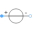
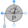
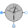
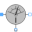

BalancingDeltaBalancing an unsymmetrical delta-connected load |
|
Diagram
{kind=link}
Information
This information is part of the Modelica Standard Library maintained by the Modelica Association.
For the unsymmetrical load (resistor, capacitor and inductor) the parameters inductance L and capacitance C are chosen such way that the magnitudes of the three phase currents (see currentSensor12, currentSensor23, currentSensor31) are equal.
P.Vaske, Berechnung von Drehstromschaltungen (German, Calculation of polyphase circuits), Teubner 1973, page 43, example 23
Parameters (5)
| V_LL |
Value: 100 Type: Voltage (V) Description: Source voltage line-to-line |
|---|---|
| f |
Value: 50 Type: Frequency (Hz) Description: Source frequency |
| R |
Value: 10 Type: Resistance (Ω) Description: Load resistance |
| L |
Value: R * sqrt(3) / (2 * Modelica.Constants.pi * f) Type: Inductance (H) Description: Load inductance |
| C |
Value: 1 / (R * sqrt(3)) / (2 * Modelica.Constants.pi * f) Type: Capacitance (F) Description: Load capacitance |
Outputs (1)
| i |
Default Value: {resistor.i, inductor.i, capacitor.i} Type: ComplexCurrent[m] Description: Phase currents |
|---|
Components (16)
| i |
Type: ComplexCurrent[m] Description: Phase currents |
|
|---|---|---|
|  | voltageSource |
Type: VoltageSource |
| star |
Type: Star |
|
| ground |
Type: Ground |
|
| plugToPin_p1 |
Type: PlugToPin_p |
|
| plugToPin_p2 |
Type: PlugToPin_p |
|
| plugToPin_p3 |
Type: PlugToPin_p |
|
|  | powerSensor |
Type: PowerSensor |
|  | currentSensor |
Type: CurrentSensor |
| resistor |
Type: Resistor |
|
| capacitor |
Type: Capacitor |
|
| inductor |
Type: Inductor |
|
|  | currentSensor12 |
Type: CurrentSensor |
| currentSensor23 |
Type: CurrentSensor |
|
| currentSensor31 |
Type: CurrentSensor |
|
| complexToPolar |
Type: ComplexToPolar[m] |